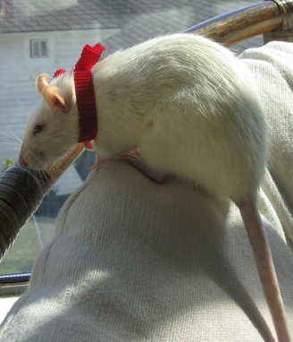

Eric Thrane |
|
Physics ResourcesGathered here are tutorials, notes, reference guides, and templates. I created this page on March 6, 2006 to remind myself how to do things that I forget, to help fellow researchers, and to put all my tools in one place. Here are some special characters to paste into your powerpoint presentation: ←, →, ↔, ↑ , ↓, ↕ ✓, ✗, †, ‡, ≈. |
 Schrödinger's rat? |